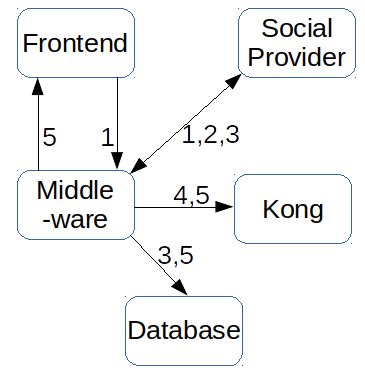

Using social logins for user management and OAuth2 for API authorization - reverse OAuth authentication
We are using NodeJS, MongoDB, Kong, React and flux.
We have the desire to use existing accounts on other plattforms in order to do user management on our platform and to secure our API via OAuth2.
We investigated OAuth2, social login, existing software, protocols, blogs, ...
Thus we come up with the following workflow:
-
The new user does a login with his/her favourite social platform, e.g. facebook or github, in the frontend via OAuth2 (and the UI of the social provider).
This is done with the grant type Authorization Code.
-
The OAuth flow is directed through the middleware via authorization code.
After that the middleware requests and stores the tokens in order to reuse them without making them visible in the client.
-
When the middleware gets valid OAuth tokens from a social provider, it requests general user information via the social providers API.
As a result these information are saved in a database.
We save them there because a user should be able to use multiple social providers for his/her distinct SlideWiki account.
Also with these tokens we are able to make an extended usage of the APIs of the social providers, e.g. using google docs for import and export.
-
We are using Kong for our API OAuth2.
This software have to be configured with each new user.
For this we are sending HTTP requests to the admin API of Kong in order to create a consumer and an application.
Thus we have user information in the database and our Kong instance configured.
-
Now we are able to retrieve an access token for our API from Kong and save it in the database.
This token is also send to the frontend and stored in there.

Realization:
1. and 2.
The first idea was that we just do the HTTPS requests manually as the social provider demand.
For our workflow we need the authorization code workflow of OAuth2 as descriped here.
As I started implementing I started with facebook.
There I saw at the documentation that it is possbile.
In order to prevent future pitholes I checked this also for github, twitter, ...
Twitter just support OAuth 1.1 or OAuth2 with client credentials.
Github is easy to use.
Google has its library and no documention about manually OAuth2.
For every social provider we need an authorization endpoint.
Thus it is a good idea to use a module which works well with hapi, our module for the service endpoints.
Also our frontend is nodejs, so it could also be used there.
But there we have express instead of hapi.
So a module with support of both will be best.
We investigated the modules on npm and the result was that we will use grant for OAuth2 and purest for a general API usage like getting user information.
grant is very easy and intuitive!
With it you just configure your providers (with credentials) and the path where the token will arrive.
So the frontend redirects the user to your service (with the provider in the path) and grant handle the OAuth(2) with social provider UI for you.
Grant workes well with google and github, but at the moment we don't get refresh tokens from every provider (at least google does).
For a few providers like google, special parameters of the OAuth2 requests are neccessary to set.
But grant does not capture this.
The most of the work in this step is to create applications on each social provider, because you need a developer account for that.
Github could be used with IPs but Google needs domain names for redirect URIs.
Also Google needs a list of trustworthy clients which will use OAuth.
Another thing which is different for each social provider is the scope parameter.
They depending on the API of each provider and have to be configured manually.
3.
As mentioned we are using the NodeJS module purest for this.
It helps using the API of multiple providers.
While using it for github and google, it seems that it does not the correct handling of the APIs.
For example github needs the User-Agent header and google has URLs which are not available in purest (you have to use the absolute URL).
But its manageable, if it will not change frequently.
So we are getting user information like the name, an id, the location, a URL and a nickname.
Github refuses at the moment to give me my email address.
Now we have to store (or update) the user information in the database.
4.
The NodeJS module request is suitable for that purpose, especially because Kong examples are using it.
For this much code is needed because the URLs, payload and return is mostly quite differently.
But it works well!
5.
With purest we get our token from Kong, save it in the database and redirect to the frontend with the token and a few user information in the headers.
Prospects
This will be activated after the first september release.
As Kong should protect our API it have to be the proxy for all services.
The most of the services will be protected with OAuth2, but a few should be accessible for everyone without a token. (or perhabs a standard token)
Also our servies are talking with each other where we need client credential for their OAuth2 authentication.
In order to realise this we will configure Kong and enhance it with plugins for better scope management.
E.g. one plugin adds the user group as header to every accepted request.
As this seems kind of easy, it will be more complicated in the future.
For fast deployment, scalability, failovers, high availability and because it is the right way, we are using docker for each service, database, Kong instance - all.